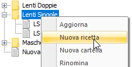
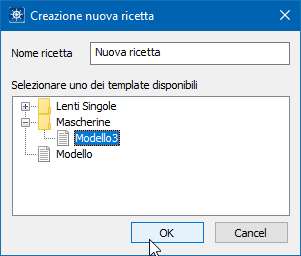

Creazione ricetta
La creazione di una nuova ricetta può essere effettuata in tre modi:
- Click con il tasto destro sulla cartella padre dell’archivio, in cui si intende inserire la nuova ricetta, e selezione dell’opzione Nuova ricetta. Da qui si è guidati nella scelta del Template di partenza da utilizzare.


- Copia diretta di un file mod nella cartella delle ricette. Come specificato nel paragrafo precedente, tutti i file mod e le cartelle individuate all’interno del percorso impostato per l’archivio ricette viene visualizzato all’interno dell’archivio stesso
- Creazione di una nuova ricetta come copia della ricetta corrente, facendo click sul pulsante Salva ricetta con nome… si viene guidati nella scelta del file .mod di destinazione, all’interno della cartella dell’archivio ricette.